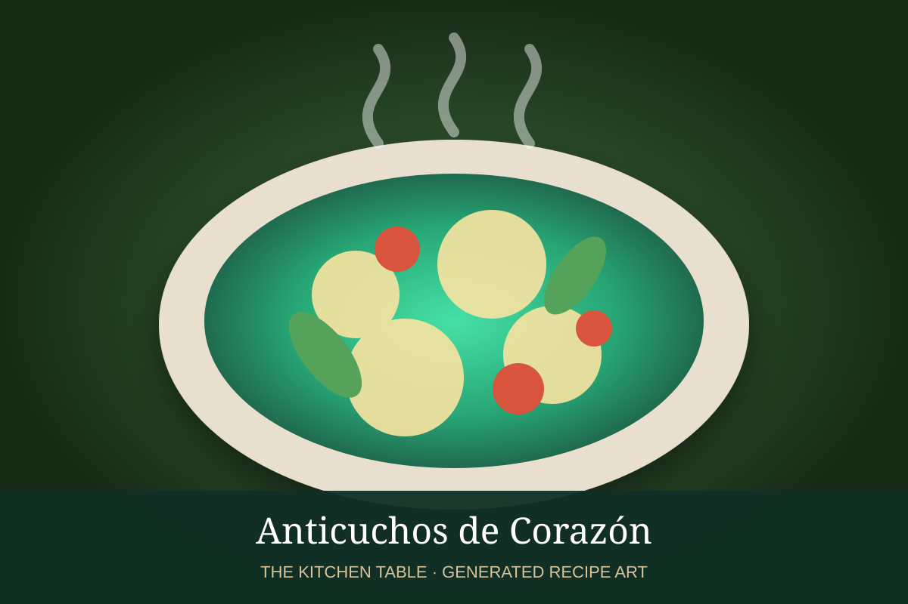

← Back to all recipes
BEEF · PERUVIAN
Anticuchos de Corazón
Peruvian beef-heart skewers marinated in ají panca, vinegar, garlic, cumin, and oregano, then grilled over high heat.
35 min + marinateServes 4

Photo: Foodwissen
Ingredients
- 2 lb beef heart, trimmed and cut into 1 1/2-inch pieces
- 1/3 cup red wine vinegar
- 3 tbsp ají panca paste
- 4 garlic cloves, minced
- 1 tsp cumin
- 1 tsp dried oregano
- 1 tsp kosher salt
- 1/2 tsp black pepper
- 2 tbsp neutral oil
- Boiled potatoes and corn, for serving
Preparation
- Whisk vinegar, ají panca, garlic, cumin, oregano, salt, pepper, and oil.
- Add beef heart and marinate 4 hours or overnight.
- Thread onto skewers.
- Grill over very high heat, about 2 to 3 minutes per side, basting lightly with marinade that has been boiled or reserved separately before contact with raw meat.
- Serve immediately with potatoes, corn, and chile sauce.